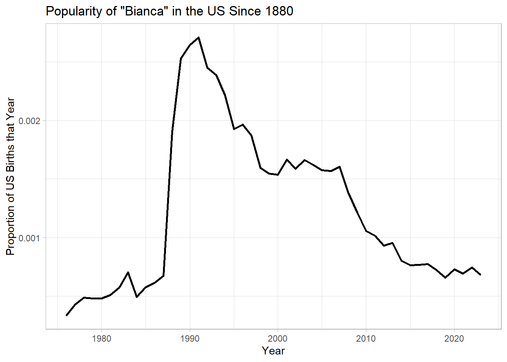

Warning: package 'tidyverse' was built under R version 4.3.3
Warning: package 'ggplot2' was built under R version 4.3.3
Warning: package 'tibble' was built under R version 4.3.3
Warning: package 'tidyr' was built under R version 4.3.3
Warning: package 'readr' was built under R version 4.3.3
Warning: package 'purrr' was built under R version 4.3.3
Warning: package 'dplyr' was built under R version 4.3.3
Warning: package 'stringr' was built under R version 4.3.3
Warning: package 'forcats' was built under R version 4.3.3
Warning: package 'lubridate' was built under R version 4.3.3
── Attaching core tidyverse packages ──────────────────────── tidyverse 2.0.0 ──
✔ dplyr 1.1.4 ✔ readr 2.1.5
✔ forcats 1.0.0 ✔ stringr 1.5.1
✔ ggplot2 3.5.1 ✔ tibble 3.2.1
✔ lubridate 1.9.4 ✔ tidyr 1.3.1
✔ purrr 1.0.4
── Conflicts ────────────────────────────────────────── tidyverse_conflicts() ──
✖ dplyr::filter() masks stats::filter()
✖ dplyr::lag() masks stats::lag()
ℹ Use the conflicted package (<http://conflicted.r-lib.org/>) to force all conflicts to become errors
dplyr
Import babynames Data
Note, this data comes from the US Social Security website and was created with code adapted from Hadley Wickham, but updated to reflect the top 500 names per year.
babynames <-read_csv("babynames_500.csv")
Rows: 144000 Columns: 7
── Column specification ────────────────────────────────────────────────────────
Delimiter: ","
chr (2): name, sex
dbl (5): n, year, proportion, rank, prop
ℹ Use `spec()` to retrieve the full column specification for this data.
ℹ Specify the column types or set `show_col_types = FALSE` to quiet this message.
Which of these is NOT a way to select the name and n columns together?
select(babynames, -c(year, sex, prop))
# A tibble: 144,000 × 4
name n proportion rank
<chr> <dbl> <dbl> <dbl>
1 Linda 99693 0.0562 1
2 Linda 96215 0.0567 1
3 James 94761 0.0518 1
4 Michael 92777 0.0430 1
5 Robert 91654 0.0501 2
6 Linda 91017 0.0532 1
7 Michael 90693 0.0429 1
8 Michael 90614 0.0427 1
9 James 88604 0.0505 1
10 Michael 88563 0.0434 1
# ℹ 143,990 more rows
select(babynames, name:n)
# A tibble: 144,000 × 3
name sex n
<chr> <chr> <dbl>
1 Linda F 99693
2 Linda F 96215
3 James M 94761
4 Michael M 92777
5 Robert M 91654
6 Linda F 91017
7 Michael M 90693
8 Michael M 90614
9 James M 88604
10 Michael M 88563
# ℹ 143,990 more rows
select(babynames, starts_with("n"))
# A tibble: 144,000 × 2
name n
<chr> <dbl>
1 Linda 99693
2 Linda 96215
3 James 94761
4 Michael 92777
5 Robert 91654
6 Linda 91017
7 Michael 90693
8 Michael 90614
9 James 88604
10 Michael 88563
# ℹ 143,990 more rows
select(babynames, ends_with("n")) # <- This code is not a way to select
Use filter, babynames, and the logical operators to find:
All of the names where prop is greater than or equal to 0.08
All the years the name “Judith” appeared in the top 500 names.
filter(babynames, prop >=0.8)
# A tibble: 0 × 7
# ℹ 7 variables: name <chr>, sex <chr>, n <dbl>, year <dbl>, proportion <dbl>,
# rank <dbl>, prop <dbl>
filter(babynames, name =="Judith")
# A tibble: 94 × 7
name sex n year proportion rank prop
<chr> <chr> <dbl> <dbl> <dbl> <dbl> <dbl>
1 Judith F 25214 1943 0.0181 7 0.0198
2 Judith F 24792 1942 0.0184 7 0.0202
3 Judith F 23318 1941 0.0193 6 0.0212
4 Judith F 22431 1944 0.0169 9 0.0185
5 Judith F 22385 1940 0.0196 4 0.0215
6 Judith F 22309 1946 0.0142 10 0.0156
7 Judith F 21997 1947 0.0124 12 0.0136
8 Judith F 20192 1945 0.0154 9 0.0170
9 Judith F 17787 1948 0.0105 15 0.0115
10 Judith F 17610 1949 0.0103 16 0.0113
# ℹ 84 more rows
Your Turn 3
Use Boolean operators to return only the rows that contain:
Boys named Sue
Names that were used by exactly 15 or 16 children in 1880
Names that are one of Acura, Lexus, or Yugo
filter(babynames, name =="Sue", sex =="M")
# A tibble: 0 × 7
# ℹ 7 variables: name <chr>, sex <chr>, n <dbl>, year <dbl>, proportion <dbl>,
# rank <dbl>, prop <dbl>
filter(babynames, n ==15| n ==16, year ==1880)
# A tibble: 68 × 7
name sex n year proportion rank prop
<chr> <chr> <dbl> <dbl> <dbl> <dbl> <dbl>
1 Agatha F 16 1880 0.000176 421 0.000182
2 America F 16 1880 0.000176 422 0.000182
3 Anita F 16 1880 0.000176 423 0.000182
4 Arminta F 16 1880 0.000176 424 0.000182
5 Dorothea F 16 1880 0.000176 425 0.000182
6 Ira F 16 1880 0.000176 426 0.000182
7 Luvenia F 16 1880 0.000176 427 0.000182
8 Marjorie F 16 1880 0.000176 428 0.000182
9 Maybelle F 16 1880 0.000176 429 0.000182
10 Mellie F 16 1880 0.000176 430 0.000182
# ℹ 58 more rows
filter(babynames, name %in%c("Acura", "Lexus", "Yugo"))
# A tibble: 2 × 7
name sex n year proportion rank prop
<chr> <chr> <dbl> <dbl> <dbl> <dbl> <dbl>
1 Lexus F 557 1996 0.000318 449 0.000434
2 Lexus F 534 1997 0.000307 470 0.000423
Help Me
What is the smallest value of n? What is the largest?
arrange(babynames, n)
# A tibble: 144,000 × 7
name sex n year proportion rank prop
<chr> <chr> <dbl> <dbl> <dbl> <dbl> <dbl>
1 Abigail F 12 1880 0.000132 492 0.000137
2 Celestine F 12 1880 0.000132 493 0.000137
3 Celina F 12 1880 0.000132 494 0.000137
4 Claudie F 12 1880 0.000132 495 0.000137
5 Clemmie F 12 1880 0.000132 496 0.000137
6 Connie F 12 1880 0.000132 497 0.000137
7 Daisie F 12 1880 0.000132 498 0.000137
8 Deborah F 12 1880 0.000132 499 0.000137
9 Dessa F 12 1880 0.000132 500 0.000137
10 Camille F 12 1881 0.000131 491 0.000135
# ℹ 143,990 more rows
arrange(babynames, desc(n))
# A tibble: 144,000 × 7
name sex n year proportion rank prop
<chr> <chr> <dbl> <dbl> <dbl> <dbl> <dbl>
1 Linda F 99693 1947 0.0562 1 0.0617
2 Linda F 96215 1948 0.0567 1 0.0623
3 James M 94761 1947 0.0518 1 0.0546
4 Michael M 92777 1957 0.0430 1 0.0453
5 Robert M 91654 1947 0.0501 2 0.0528
6 Linda F 91017 1949 0.0532 1 0.0585
7 Michael M 90693 1956 0.0429 1 0.0452
8 Michael M 90614 1958 0.0427 1 0.0450
9 James M 88604 1948 0.0505 1 0.0532
10 Michael M 88563 1954 0.0434 1 0.0457
# ℹ 143,990 more rows
Your Turn 4
Use %>% or |> to write a sequence of functions that:
Filters babynames to just the girls that were born in 2023, then…
Selects the name and n columns, then…
Arranges the results so that the most popular names are near the top.
female_2023 <-filter(babynames, year ==2023, sex =="F") |>select(name, n) |>arrange(desc(n))
Your Turn 5
Trim babynames to just the rows that contain yourname and choose an option for sex.
Trim the result to just the columns that will appear in your graph (not strictly necessary, but useful practice)
Plot the results as a line graph with year on the x axis and prop on the y axis
Update the labels and titles
Save your graph as “yourname.png” to submit for your preview work.
babynames |>filter(name =="Bianca", sex =="F") |>select (year, prop) |>ggplot()+geom_line(mapping =aes(x=year, y=prop), size=1)+labs(x ="Year", y ="Proportion of US Births that Year",title ="Popularity of \"Bianca\" in the US Since 1880") +theme_light()
Warning: Using `size` aesthetic for lines was deprecated in ggplot2 3.4.0.
ℹ Please use `linewidth` instead.

ggsave(filename ="Bianca_Rodas_W6Video.png")
Saving 7 x 5 in image
Preview
Creating new variables or calculating summaries of existing variables is often useful when answering research questions.
babynames %>%filter(name =="Jordan") |>group_by(year) |>summarise(total_prop =sum(prop)) |>ggplot() +geom_line(mapping =aes(x = year, y = total_prop), size =1) +labs(x ="Year", y ="Proportion of US Births that Year",title ="Popularity of \"Jordan\" in the US Since 1880") +theme_light()